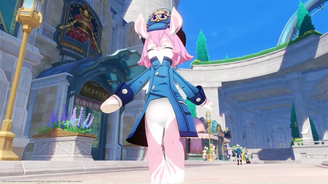

Fontaine · Species & Creatures
The Melusines
Melusines emerged from the wounds of Elynas around four centuries ago and built a community in Merusea Village. Neuvillette later brought them into Fontainian society, where Carole’s story and the Vautrin trial helped secure their legal protections.

Born from Elynas’s Wounds
Melusines are Fontaine’s small, amphibious people. About four hundred years before the game’s present, an explosion during a battle between the Marechaussee Hunters and the Narzissenkreuz Ordo drove clockwork-meka parts through Elynas, the great beast whose remains lie in Fontaine. Melusines later emerged from Elynas’s wounds, and each carries a distinctive mechanical token connected to that event.
Elynas regarded the Melusines as his daughters and helped them make Merusea Village within his remains. They lived there before asking to meet people on the surface. The game gives them this specific origin; it does not say they were deliberately manufactured by Neuvillette or designed by the Hydro Sovereigns.
A Community in Fontaine
Neuvillette brought the Melusines to the Court of Fontaine and supported their place in Fontainian society. Their acceptance was contested. Carole was framed for murder by people opposed to that change and sacrificed herself to prove her innocence; the trial of Vautrin that followed helped change public opinion. Neuvillette later helped secure legal protections, including a rule that Melusines be addressed with she/her pronouns and penalties for treating them as monsters.
Melusines now take many roles across Fontaine. Many work in the Court, and the Marechaussee Phantom’s investigators are mostly Melusines. Sigewinne leads the infirmary staff at the Fortress of Meropide. These jobs are part of a varied community, not a biological destiny that makes every Melusine an investigator or healer.
Perception and the Hydro Vishap Connection
Melusines perceive some things differently from humans, including colors beyond the human range. Those senses help explain why many serve in the Marechaussee Phantom, but the game does not establish that they can read guilt or detect lies as a supernatural aura.
Neuvillette’s character story calls the Melusines a ‘new sort of Hydro Vishap species’ and describes them as his dependents and successors. That wording links them to his Hydro lineage, but it does not settle the exact biological meaning of the phrase. Pahsiv’s ability to take on a Melusine-like form adds evidence of a relationship without making every detail of the species’ biology explicit.
The Melusines’ origin, sensory differences, and legal history are established in different quest and character records. Keep those facts distinct from assumptions about their perception, their relationship to Hydro Vishaps, or what every member of their community can do.
This is an original CoreGG reading guide, not an official HoYoverse article or a reproduction of the game text. Source links below identify the records used so you can check the original context.
Sources & references
Check these sources for the original game text and reference trail.
- Teyvatica · Melusine origin, community, and source distinctions
- Genshin Impact Wiki · Melusine characters and records
- Genshin Impact Wiki · Elynas and Melusine origin quest
- Genshin Impact Wiki · Neuvillette Story Quest and Carole’s history
- Genshin Impact Wiki · Sigewinne Story Quest and Melusine history
- HoYoWiki · Elynas reference entry